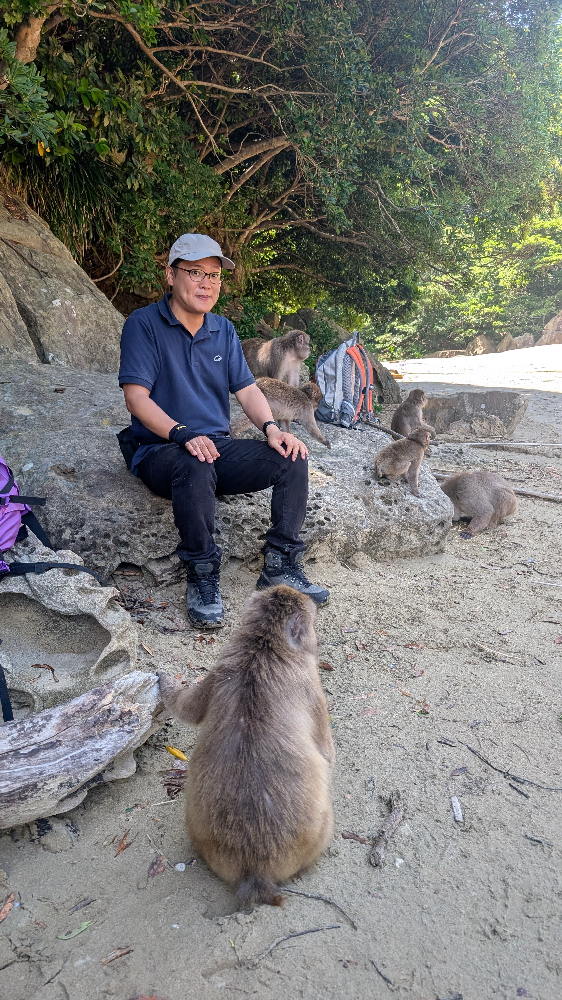
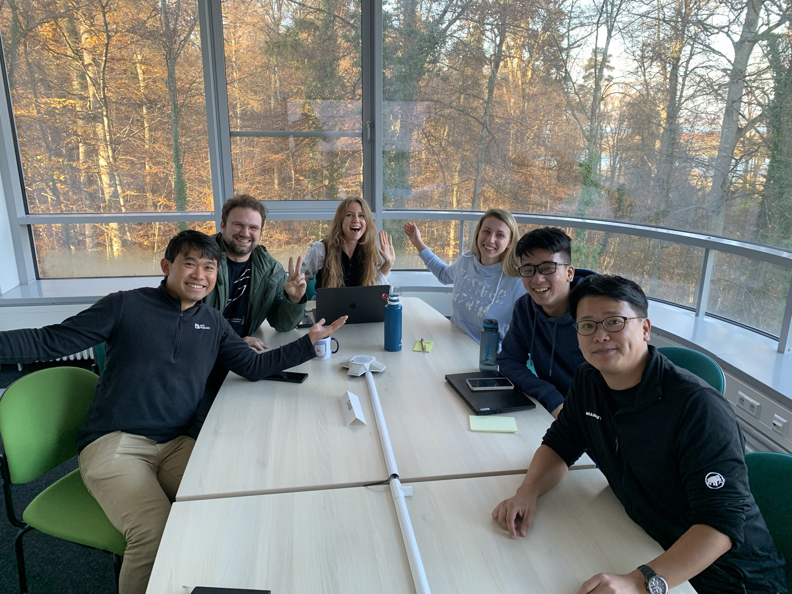

MEMBERS
People connected by questions. 
Fumihiro Kano · Selected portrait PRINCIPAL INVESTIGATOR
Fumihiro Kano Associate Professor, Institute for Advanced Study
Designated Associate Professor, Graduate School of Informatics, Nagoya University
Comparative cognitive science: studying cognition through gaze in animal social life.
Kyushu University profile ↗ Nagoya University profile (Japanese) ↗ PREVIOUS LAB MEMBERS
Students and researchers at previous institutions Roles refer to earlier work at Konstanz and Kyoto University. These historical entries do not imply current Kyushu membership.
Former doctoral student, University of Konstanz Alex Hoi Hang Chan 2025 doctoral defense announcement ↗
Former doctoral student, University of Konstanz Mathilde Delacoux Former doctoral student in the Kano–Hirata research group, Kyoto University Akihiro Itahara Research-group profile from the doctoral period ↗
Postdoctoral researcher in the former Konstanz lab Michael Chimento Postdoctoral researcher in the Konstanz lab Prasetia Utama Putra SHARED MOMENTS
People and shared moments. A photograph from earlier lab life in Konstanz. It is separate from the current roster. Select the photograph to see its complete original composition. More moments from research →

With lab colleagues in Konstanz.18 November 2025 · Konstanz, Germany COLLABORATORS
Principal collaborators Researchers working with us, listed separately from lab members and visitors.
Niigata University Nozomi Nishiumi Nagoya University Sota Inoue Nagoya University Keisuke Fujii Kyoto University Satoshi Hirata Kyoto University Ikuma Adachi Kyoto University Hiroo Imai Kyushu University Kazuhide Hashiya University of Tokyo Kazushi Tsutsui University of Rochester Dora Biro University of St Andrews Josep Call Eötvös Loránd University (ELTE) Máté Nagy MPI for Evolutionary Anthropology Christoph Völter MPI of Animal Behavior Hemal Naik University of Konstanz Michael Griesser MPI of Animal Behavior / University of Konstanz Iain D. Couzin University of Konstanz Oliver Deussen Johns Hopkins University Christopher Krupenye Duke University Michael Tomasello UC Santa Barbara Laura Simone Lewis University of Rochester Takao Sasaki Kyoto City Zoo Yumi Yamanashi Nottingham Trent University Yuri Kawaguchi MPI for Evolutionary Anthropology James Brooks University of Vienna Thomas Bugnyar